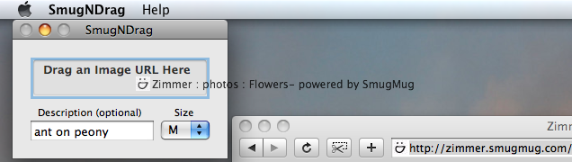

To use, navigate to the desired image in a SmugMug gallery with your browser and drag the url to SmugNDrag. The description of the image can be entered in the text field and will be used as thealt
attribute in the img element. To change the size of the image
referenced at SmugMug choose the appropriate item in the dropdown.
The correctly formatted bloggable url will then be copied to the pasteboard
for use in the editor of your choice.